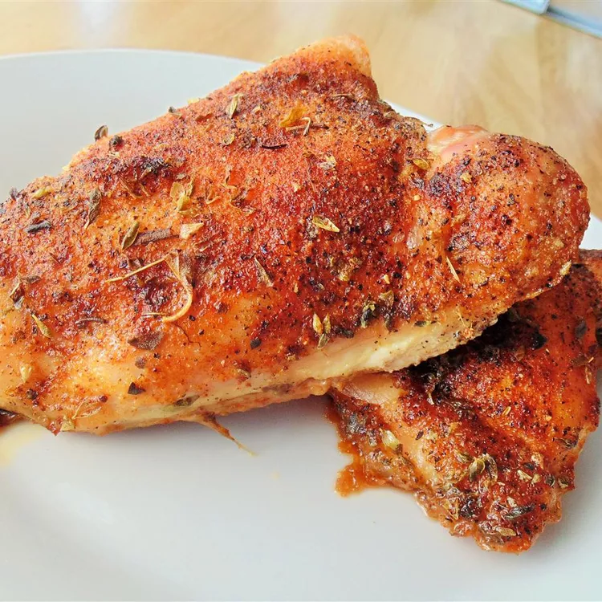

Roated Chicken recipe

This Roated Chicken recipe takes a little work, but it is so satisfying and filling that it's worth it!
I made up this one to resemble the rotisserie chicken I love so much. It is so expensive here, so here's my version.
Ingredients:
- cooking spray
- 1 whole chicken, cut into 8 pieces
- 1 teaspoon salt
- 1 teaspoon ground black pepper
- 1 teaspoon ground paprika
- 1 teaspoon garlic powder
- 1 teaspoon dried oregano
Step-By-Step:
- Preheat oven to 425 degrees F (220 degrees C). Grease a 9x13-inch pan with cooking spray..
- Arrange chicken pieces in the baking pan. Sprinkle salt, pepper, paprika, garlic powder, and oregano over both sides.
- Roast in the preheated oven until chicken is browned and the juices run clear, about 1 hour. An instant-read thermometer inserted near the bone should read 165 degrees F (74 degrees C).